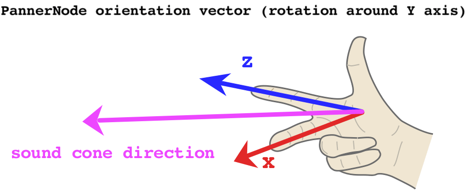

{{ APIRef("Web Audio API") }}
The orientationX property of the {{
domxref("PannerNode") }} interface indicates the X (horizontal) component of the
direction in which the audio source is facing, in a 3D Cartesian coordinate space.
The complete vector is defined by the position of the audio source, given as ({{domxref("PannerNode.positionX", "positionX")}}, {{domxref("PannerNode.positionY", "positionY")}}, {{domxref("PannerNode.positionZ", "positionZ")}}), and the orientation of the audio source (that is, the direction in which it's facing), given as ({{domxref("PannerNode.orientationX", "orientationX")}}, {{domxref("PannerNode.orientationY", "orientationY")}}, {{domxref("PannerNode.orientationZ", "orientationZ")}}).
Depending on the directionality of the sound (as specified using the attributes {{domxref("PannerNode.coneInnerAngle", "coneInnerAngle")}}, {{domxref("PannerNode.coneOuterAngle", "coneOuterAngle")}}, and {{domxref("PannerNode.coneOuterGain", "coneOuterGain")}}), the orientation of the sound may alter the perceived volume of the sound as it's being played. If the sound is pointing toward the listener, it will be louder than if the sound is pointed away from the listener.
The {{domxref("AudioParam")}} contained by this property is read only; however, you can still change the value of the parameter by assigning a new value to its {{domxref("AudioParam.value")}} property.
var orientationX = PannerNode.orientationX; PannerNode.orientationX.value = newOrientationX;
An {{domxref("AudioParam")}} whose value is the X component of the
direction in which the audio source is facing, in 3D Cartesian coordinate space.
In this example, we'll demonstrate how changing the orientation parameters of a {{ domxref("PannerNode") }} in combination with {{domxref("PannerNode.coneInnerAngle", "coneInnerAngle")}} and {{domxref("PannerNode.coneOuterAngle", "coneOuterAngle")}} affects volume. To help us visualise how the orientation vector affects, we can use the Right-hand rule:

First, let's start by writing a utility function to figure out our orientation vector. The X and Z components are always at a 90° to each other, so we can use the sine and cosine functions, which are offset by the same amount in radians. However, normally this would mean the {{ domxref("PannerNode") }} points to the left of the listener at 0° rotation – since `x = cos(0) = 1` and `z = sin(0) = 0`. It's more useful to offset the angle by -90°, which means the {{ domxref("PannerNode") }} will point directly at the listener at 0° rotation.
// this utility converts amount of rotation around the Y axis
// (i.e. rotation in the 'horizontal plane') to an orientation vector
const yRotationToVector = degrees => {
// convert degrees to radians and offset the angle so 0 points towards the listener
const radians = (degrees - 90) * (Math.PI / 180);
// using cosine and sine here ensures the output values are always normalized
// i.e. they range between -1 and 1
const x = Math.cos(radians);
const z = Math.sin(radians);
// we hard-code the Y component to 0, as Y is the axis of rotation
return [x, 0, z];
};
Now we can create our {{ domxref("AudioContext") }}, an oscillator and a {{ domxref("PannerNode") }}:
const context = new AudioContext(); const osc = new OscillatorNode(context); osc.type = 'sawtooth'; const panner = new PannerNode(context); panner.panningModel = 'HRTF';
Next, we set up the cone of our spatialised sound, determining the area in which it can be heard:
// this value determines the size of the area in which the sound volume is constant // if coneInnerAngle == 30, it means that when the sound is rotated // by at most 15 (30/2) degrees either direction, the volume won't change panner.coneInnerAngle = 30; // this value determines the size of the area in which the sound volume decreases gradually // if coneOuterAngle == 45 and coneInnerAngle == 30, it means that when the sound is rotated // by between 15 (30/2) and 22.5 (45/2) degrees either direction, // the volume will decrease gradually panner.coneOuterAngle = 45; // this value determines the volume of the sound outside of both inner and outer cone // setting it to 0 means there is no sound, so we can clearly hear when we leave the cone // 0 is also the default panner.coneOuterGain = 0; // increase the Z position to ensure the cone has an effect // (otherwise the sound is located at the same position as the listener) panner.positionZ.setValueAtTime(1, context.currentTime);
Having set up the {{ domxref("PannerNode") }}, we can now schedule some updates to its Y-axis rotation:
// calculate the vector for no rotation // this means the sound will play at full volume const [x1, y1, z1] = yRotationToVector(0); // schedule the no-rotation vector immediately panner.orientationX.setValueAtTime(x1, context.currentTime); panner.orientationY.setValueAtTime(y1, context.currentTime); panner.orientationZ.setValueAtTime(z1, context.currentTime); // calculate the vector for -22.4 degrees // since our coneOuterAngle is 45, this will just about make the sound audible // if we set it to +/-22.5, the sound volume will be 0, as the threshold is exclusive const [x2, y2, z2] = yRotationToVector(-22.4); panner.orientationX.setValueAtTime(x2, context.currentTime + 2); panner.orientationY.setValueAtTime(y2, context.currentTime + 2); panner.orientationZ.setValueAtTime(z2, context.currentTime + 2);
Finally, let's connect all our nodes and start the oscillator!
osc.connect(panner) .connect(context.destination); osc.start(0);
| Specification | Status | Comment |
|---|---|---|
| {{SpecName('Web Audio API', '#dom-pannernode-orientationx', 'orientationX')}} | {{Spec2('Web Audio API')}} |
{{Compat("api.PannerNode.orientationX")}}